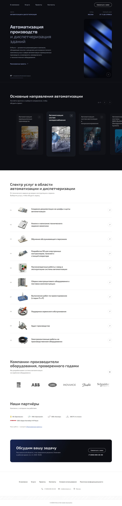
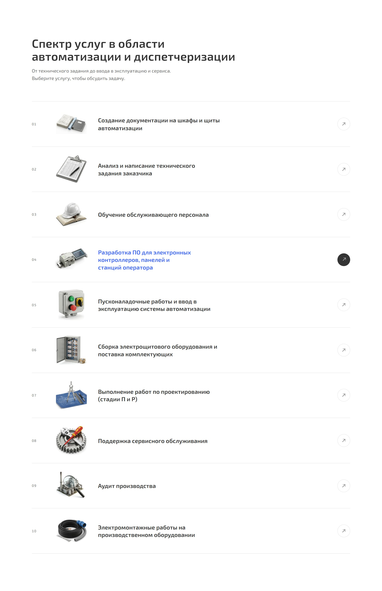
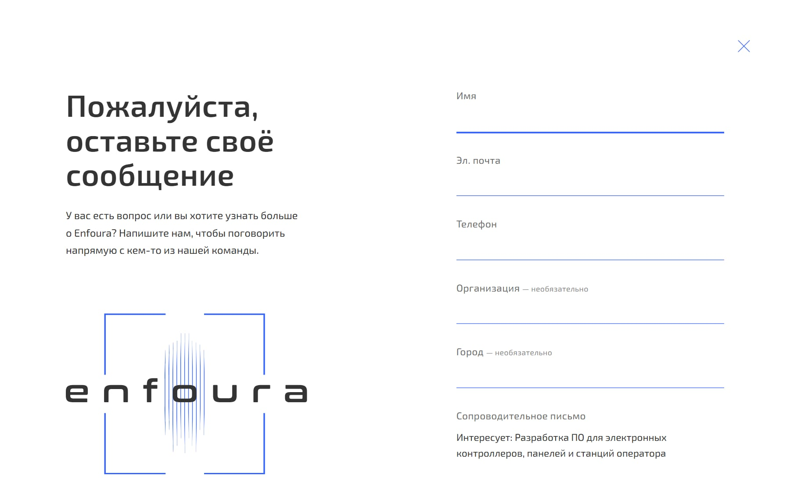
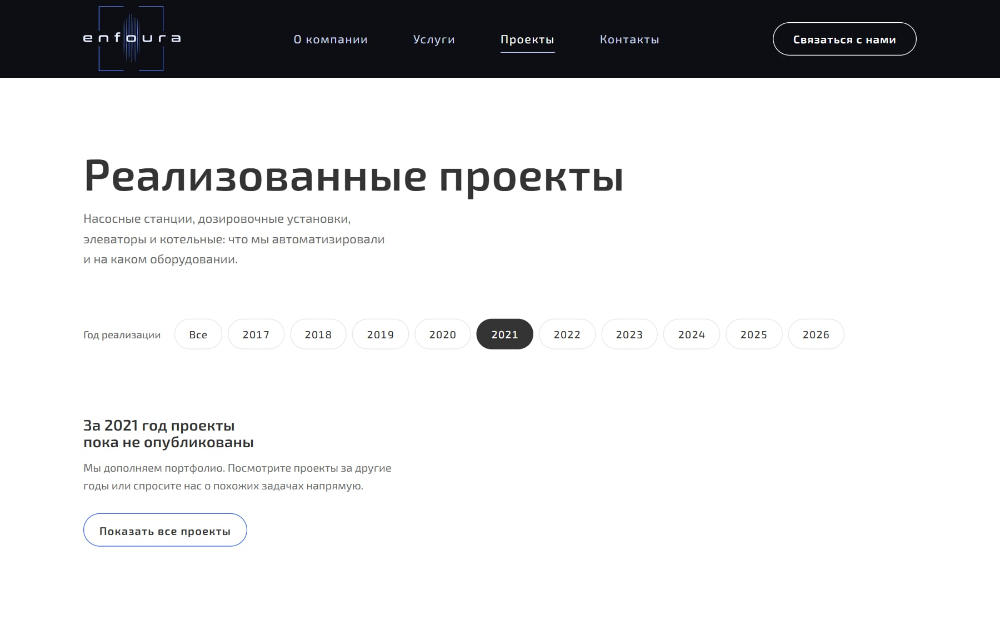
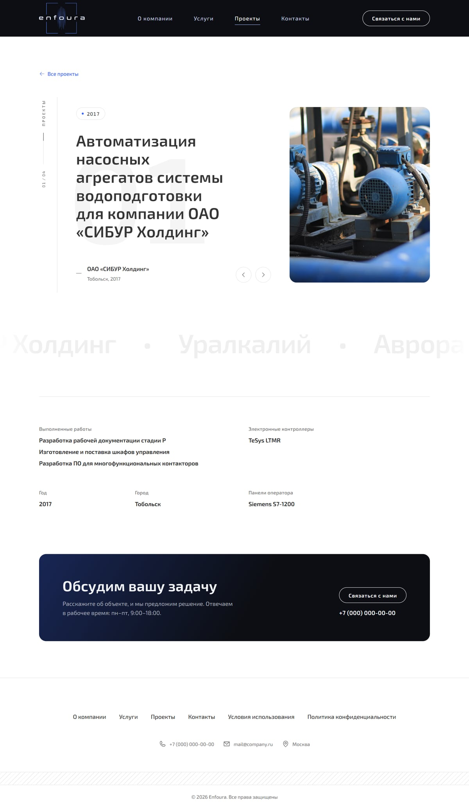
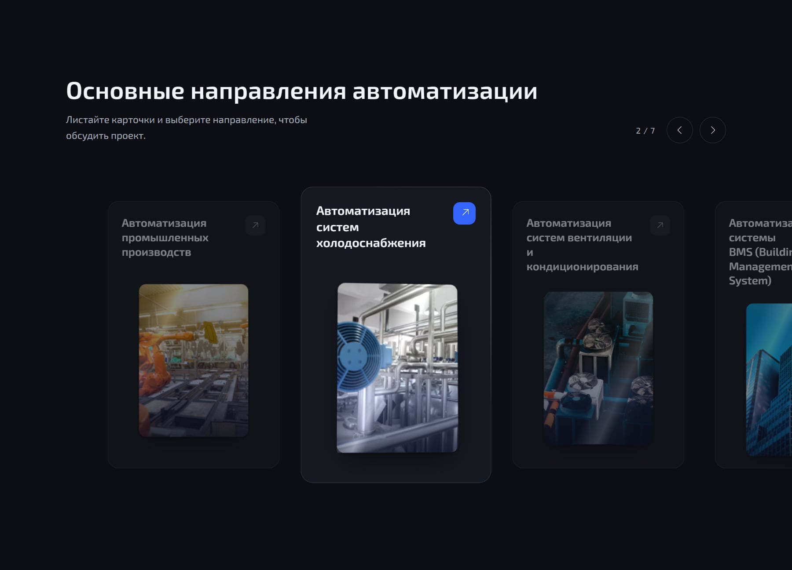
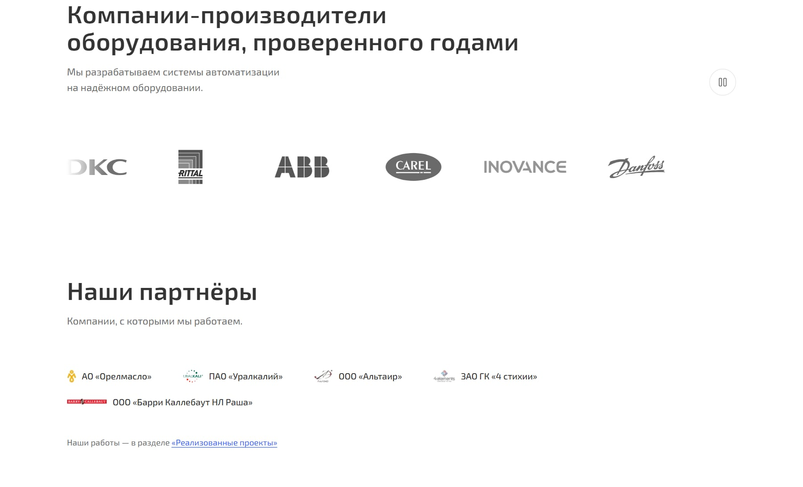

О проекте
Концепт редизайна корпоративного сайта Enfoura. Исходная версия сайта сделана в 2020 году, задача — её обновить. Сайт не запущен.
В редизайн вошли главная, каталог проектов, страница проекта, контакты, форма заявки поверх любой страницы и две юридические страницы. Логотип и знак Enfoura — тоже часть моей работы.
Проекты и партнёры взяты со старой версии сайта. Фотографии — стоковые заглушки, контакты на скриншотах скрыты.
Задача
Обновить сайт без новых вводных
Бриф был коротким: обновить старую версию. Данных о посетителях, сроков и требований к функциям не было. Поэтому решения ниже — мои гипотезы о том, что нужно посетителю B2B-сайта, а не выводы из исследования.
Содержание осталось прежним: 7 направлений автоматизации, 10 услуг, производители оборудования, партнёры и реализованные проекты. Работа была в том, чтобы разложить его по понятной структуре и дать с любого места короткий путь к заявке.
Ограничения
Контента меньше, чем места под него
Ограничивал не срок, а контент. В каталоге четыре проекта, все 2017 года, и полные данные — выполненные работы, контроллеры, панели оператора — есть только у одного. Фотографий объектов нет. Шаблоны нужно было собрать так, чтобы они не разваливались ни от пустого года, ни от короткого описания проекта.
Структура
Главная: от «чем вы занимаетесь» к «с кем работаете»
Первый экран называет сферу и город. Дальше идут направления, услуги, производители оборудования, партнёры и блок «Обсудим вашу задачу». Вокруг главной — каталог проектов, страница проекта и контакты с картой двух адресов.

Услуги — нумерованный список из десяти строк. У каждой строки — иллюстрация и стрелка, при наведении строка подсвечивается.

Решение 1 · Путь к заявке
Любая услуга открывает форму, где тема уже вписана
Проблема
17 входов в разговор.
7 направлений и 10 услуг — посетитель приходит с конкретной задачей. Если форма одна на весь сайт, ему приходится пересказывать то, что он только что выбрал.
Решение
Форма поверх страницы, тема — в первой строке.
Плитка направления или строка услуги открывает форму без перехода, а поле сообщения начинается с «Интересует: …» и названия услуги. Если посетитель уже начал писать, тема его текст не перезапишет.
Почему
Меньше полей — меньше поводов уйти.
Обязательны имя и один способ связи: почта или телефон, а не оба. Ошибки подсказывают, как исправить: «Номер слишком короткий — укажите его с кодом города».
Что может опровергнуть
Посетитель хотел прочитать, а получил форму.
Если формы, открытые со строк услуг, чаще закрывают без отправки, чем ту же форму из шапки, — людям нужны страницы услуг, а не форма. Это первое, что я бы проверил после запуска.

Решение 2 · Каталог проектов
Шаблон, который выдерживает неравномерный контент
Проблема
Четыре проекта и фильтр на десять лет.
Каталог должен расти, но сейчас в нём четыре проекта за один год, и подробности есть только у одного.
Решение
Пустой год — не пустая сетка.
Если за выбранный год проектов нет, каталог объясняет это и предлагает «Показать все проекты». Страница проекта выводит только заполненные поля. Год и страница выдачи сохраняются в адресе, поэтому выдачей можно поделиться.
Почему
Каталог пополняют без дизайнера.
Новый проект — это новая запись в списке данных. Шаблон не должен требовать правок, когда у проекта нет фото, города или списка оборудования.
Что может опровергнуть
Фильтр, который ведёт в пустоту.
Сейчас 9 из 10 годов пустые. Если каталог не пополнят, фильтр по годам станет лишним шагом — тогда лучше показывать только годы, за которые есть проекты.

Страница проекта: номер и счётчик слева, заголовок появляется по словам, внизу — бегущая строка с названиями заказчиков. Ниже — факты в две колонки: работы, контроллеры, год и город, панели оператора.

Решение 3 · Визуальный язык
Новый знак, тёмный первый экран и движение с выключателем
Решение
Знак, полосы света, синий акцент.
Я нарисовал логотип и знак Enfoura. Первый экран тёмный, со световыми полосами. Синий отмечает действия и активные состояния. Заголовки разделов проявляются по буквам, а плитки направлений поворачиваются за курсором.
Как движение не мешает
Его можно отключить.
При системной настройке «уменьшить движение» анимации выключаются. У карусели логотипов есть кнопка паузы. Карусель направлений и страницу проекта можно листать стрелками на клавиатуре.
Что может опровергнуть
Посетитель не видит седьмую карточку.
В карусели одновременно видно 3–4 направления из 7. Если до последних карточек почти никто не долистывает, направления лучше показать сеткой.


Адаптив
От 1440 до 390 px
Сетка перестраивается на 1100, 900, 720 и 480 px. Ниже 900 px навигация уходит в меню, фильтр годов переносится в несколько строк, а направления листаются свайпом.
Слева направо: главная, меню, направления, каталог, страница проекта, форма заявки.
Результат
Сделан концепт сайта: главная, каталог, страница проекта, контакты, форма заявки и две юридические страницы, с новым логотипом и адаптивом до 390 px. Сайт не запущен.
Что не доделано: направления и услуги ведут в форму, а не на собственные страницы — для этого нужны описания каждой услуги. Форма не подключена к почте или CRM и пока открывает почтовый клиент. Фотографии — стоковые, в каталоге четыре проекта.
Метрик нет: сайт не работал с реальными посетителями. Ниже — что бы я проверил после запуска и как бы мерил эффект.
Что бы проверил первым
- Нужны ли страницы услуг: сколько форм, открытых со строк услуг, закрывают без отправки.
- Долистывают ли до последних направлений в карусели.
- Сколько кликов по фильтру годов заканчиваются пустой выдачей.
Как бы мерил успех
- Конверсия визита в отправленную заявку
- Доля заявок с темой из услуги или направления
- Переходы из каталога на страницу проекта
- Доля заявок с мобильных